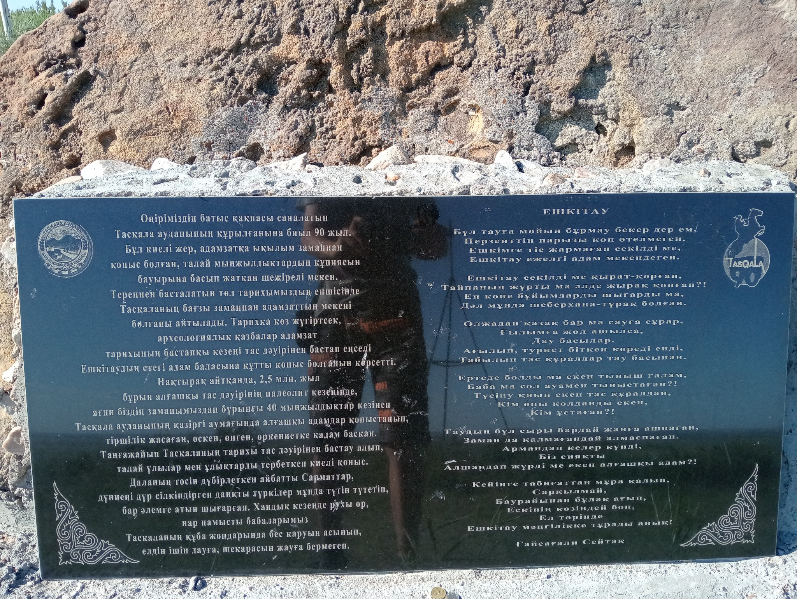
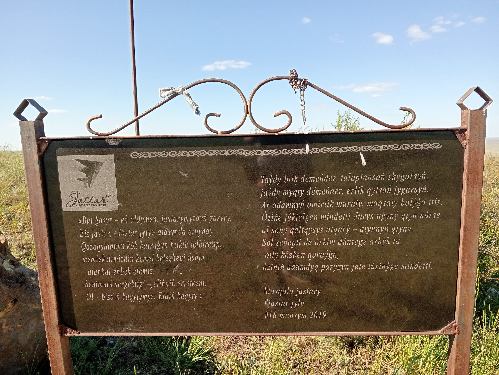
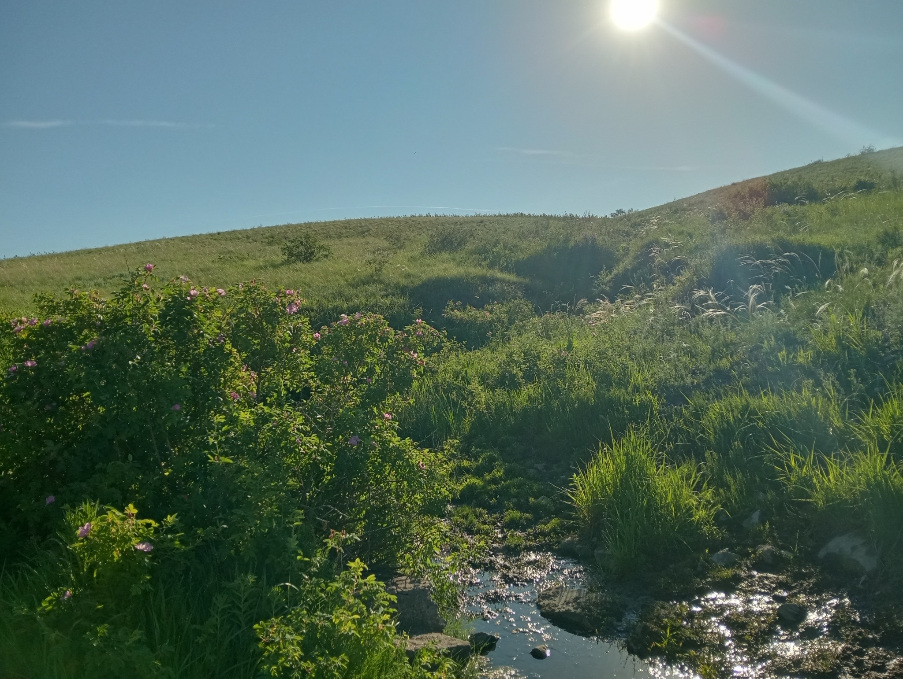

Описание
Ешкитау — это гора высотой около 254 метров, расположенная в Западно-Казахстанской области, недалеко от посёлка Таскала. Гора является значимым историческим объектом, рядом с ней находятся памятные плиты и родник.
Историческая справка
На одной из памятных плит указано, что Таскалинская земля была местом поселений людей ещё в древние времена. Археологические находки подтверждают её важность в истории края.
Молодёжное послание
На другой табличке — слова, посвящённые молодёжи, написанные в рамках года молодёжи Казахстана:
Родник
У подножия горы находится родник — источник чистой воды, который стал знаковым местом для местных жителей.
